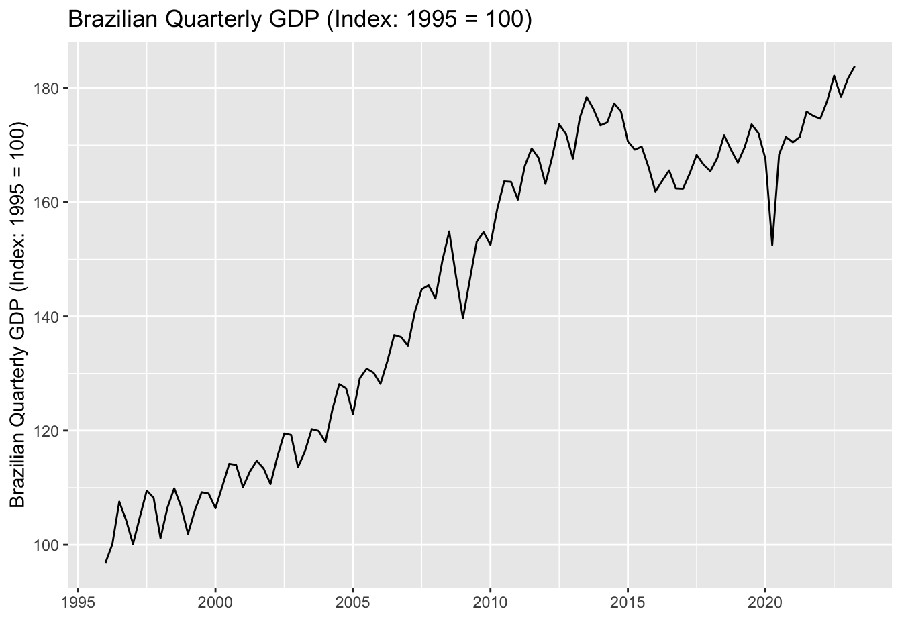
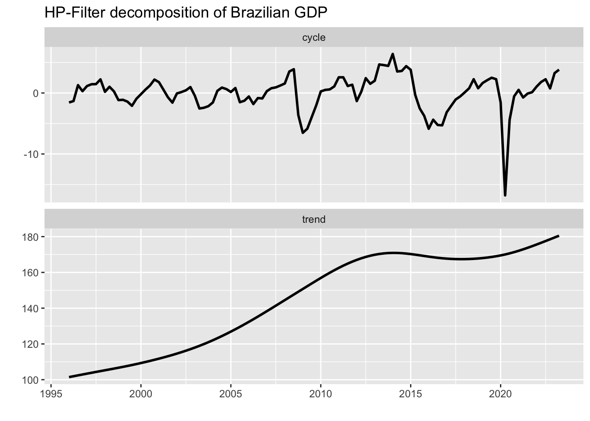
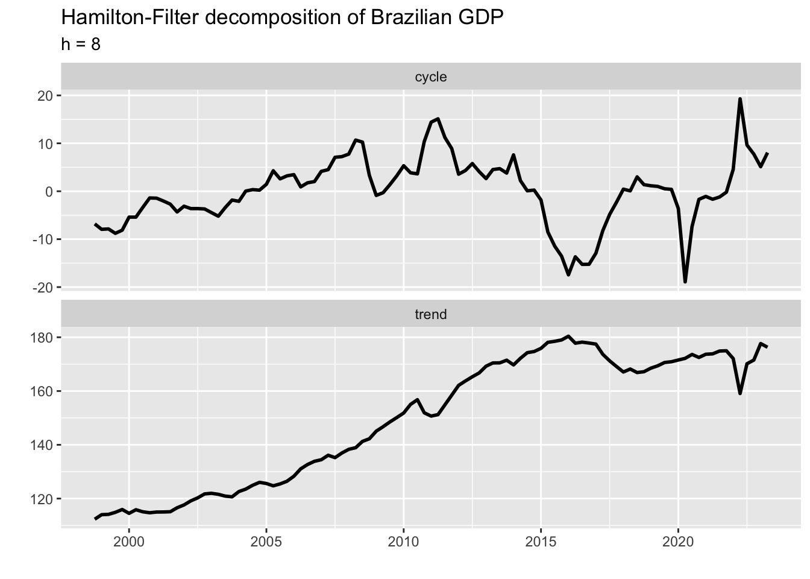
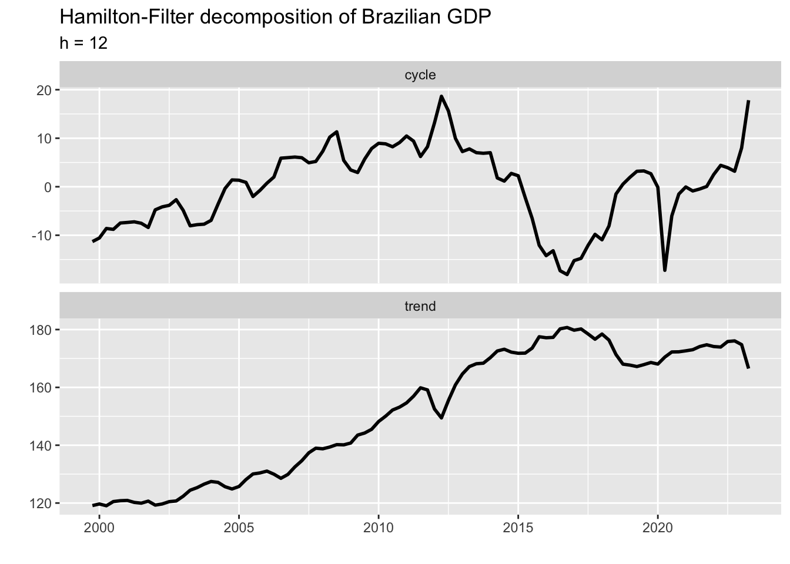
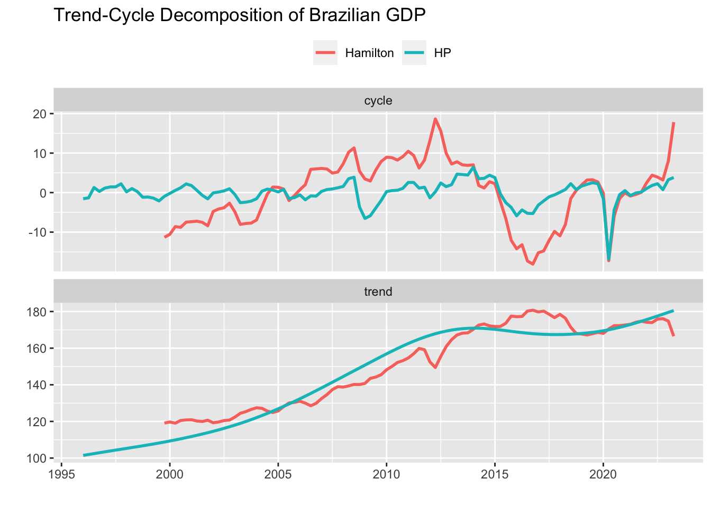

library(tidyverse)
library(lubridate)
gdp_br <- sidrar::get_sidra(
api = '/t/1620/n1/all/v/all/p/all/c11255/90707/d/v583%202'
)
gdp_br <- gdp_br %>%
select(quarter = `Trimestre (Código)`, gdp = Valor) %>%
mutate(quarter = zoo::as.yearqtr(quarter, format = '%Y%q'))
gdp_br_ts <- ts(
gdp_br$gdp,
start = first(gdp_br$quarter),
frequency = 4
)6 Hodrick-Prescott Filter
In many economic applications, it’s necessary to decompose the time series into trend and cycle in order to relate the observed data with its theoretical counterpart. A classic example is the GDP series, where the trend component is often used as the empirical counterpart for potential GDP and the cycle component as the empirical counterpart for the output gap. In other applications, decomposition may be employed simply to make time series smoother by removing transitory events.
There are several statistical filters that perform this task, the best known being the Hodrick-Prescott filter. The HP-Filter requires only a single parameter, \(\lambda\), which controls the sensitivity of the trend to short-term fluctuations. The rule of thumb is to use \(\lambda = 1600\) for quarterly data; \(\lambda = 14400\) for monthly data; and \(\lambda = 100\) for yearly data. The hpfilter function from the mFilter package implements the HP-Filter with default values for \(\lambda\) defined by the frequency of the time series object ts.
To see how it works in practice, let’s import data on Brazilian GDP using the sidrar package which is an interface to IBGE’s API. I chose to define the date variable using the as.yearqtr function from the zoo package because it’s compatible with ts objects – which is the default input for the hpfilter function.
library(forecast)
gdp_br_ts %>%
autoplot() +
labs(
title = 'Brazilian Quarterly GDP (Index: 1995 = 100)',
x = '',
y = 'Brazilian Quarterly GDP (Index: 1995 = 100)'
)
Since the HP-Filter is not explicitly designed to deal with seasonality, I first remove the seasonal component using the automatic selection model provided by the seas function. The remaining pieces of code just apply the HP-Filter to the GDP time series and arrange the relevant output into a data frame.
library(seasonal)
library(mFilter)
gdp_br_sa <- final(seas(gdp_br_ts))
gdp_br_hp <- hpfilter(gdp_br_sa)
hp_out <- tibble(
'quarter' = gdp_br$quarter,
'cycle' = gdp_br_hp$cycle %>% c(),
'trend' = gdp_br_hp$trend %>% c()
)hp_out %>%
pivot_longer(-quarter, names_to = 'var', values_to = 'value') %>%
ggplot(aes(x = quarter)) +
geom_line(aes(y = value), lwd = 1) +
facet_wrap(~ var, scales = 'free_y', ncol = 1) +
labs(
title = 'HP-Filter decomposition of Brazilian GDP',
x = '',
y = ''
)
Despite its vast popularity and widespread use, the HP filter gets mixed reviews. Perhaps the best known of these is the end-point bias, whose most common workaround is to add projections to the end of the series before applying the filter. We won’t dive into the pros and cons of the HP filter, since it’s beyond the scope of this book. Hamilton (2017) formalized several of these issues and proposed a new filter that was supposed to overcome all of them. According to the author:
“A regression of the variable at date \(t+h\) on the four most recent values as of date \(t\) offers a robust approach to detrending that achieves all the objectives sought by users of the HP filter with none of its drawbacks.”
The fitted values and the residuals from the equation below provide, respectively, the trend and cycle components of the Hamilton filter. As a practical guide, Hamilton suggested using \(h=8\) for quarterly data. Nonetheless, some series may require longer periods \(h\) or more lags \(k\) for the filter to be effective.
\[ y_{t+h} = \alpha + \sum_{p=1}^{4} \beta_p y_{t+1-p} \]
We can perform Hamilton’s filter by estimating the above equation and then arranging the corresponding output into a data frame as we did with the HP filter. The augment function from the broom package does a great job in converting the output in the lm object into a data frame.
gdp_br_hamilton <- tibble(
quarter = gdp_br$quarter,
gdp_sa = gdp_br_sa %>% c()
) %>%
mutate(
y = gdp_sa,
y1 = lag(gdp_sa, 8),
y2 = lag(gdp_sa, 9),
y3 = lag(gdp_sa, 10),
y4 = lag(gdp_sa, 11)
)
hamilton_filter <- lm(y ~ y1 + y2 + y3 + y4, gdp_br_hamilton)
hamilton_out <- hamilton_filter %>%
broom::augment() %>%
mutate(quarter = gdp_br_hamilton$quarter[as.numeric(.rownames)]) %>%
select(quarter, trend = .fitted, cycle = .resid)hamilton_out %>%
pivot_longer(-quarter, names_to = 'var', values_to = 'value') %>%
ggplot(aes(x = quarter)) +
geom_line(aes(y = value), lwd = 1) +
facet_wrap(~ var, scales = 'free_y', ncol = 1) +
labs(
title = 'Hamilton-Filter decomposition of Brazilian GDP',
subtitle = 'h = 8',
x = '',
y = ''
)
We can see a sharp drop-and-rise in the final part of the output series which is at odds with what we would expect from a trend component. This problem can be solved by setting \(h = 12\) (\(h\) should be a multiple of the time series frequency). The new plot is shown below.
gdp_br_hamilton2 <- tibble(
quarter = gdp_br$quarter,
gdp_sa = gdp_br_sa %>% c()
) %>%
mutate(
y = gdp_sa,
y1 = lag(gdp_sa, 12),
y2 = lag(gdp_sa, 13),
y3 = lag(gdp_sa, 14),
y4 = lag(gdp_sa, 15)
)
hamilton_filter2 <- lm(y ~ y1 + y2 + y3 + y4, gdp_br_hamilton2)
hamilton_out2 <- hamilton_filter2 %>%
broom::augment() %>%
mutate(quarter = gdp_br_hamilton2$quarter[as.numeric(.rownames)]) %>%
select(quarter, trend = .fitted, cycle = .resid)
hamilton_out2 %>%
pivot_longer(-quarter, names_to = 'var', values_to = 'value') %>%
ggplot(aes(x = quarter)) +
geom_line(aes(y = value), lwd = 1) +
facet_wrap(~ var, scales = 'free_y', ncol = 1) +
labs(
title = 'Hamilton-Filter decomposition of Brazilian GDP',
subtitle = 'h = 12',
x = '',
y = ''
)
final_out <- hamilton_out2 %>%
mutate(type = 'Hamilton') %>%
bind_rows(
hp_out %>%
mutate(type = 'HP')
)
final_out %>%
pivot_longer(
-c(quarter, type),
names_to = 'var',
values_to = 'value'
) %>%
ggplot(aes(x = quarter)) +
geom_line(aes(y = value, color = type), lwd = 1) +
facet_wrap(~ var, scales = 'free_y', ncol = 1) +
theme(legend.position = 'top') +
labs(
title = 'Trend-Cycle Decomposition of Brazilian GDP',
x = '',
y = '',
color = ''
)
Which one should we choose in this case? From the statistical point of view, the HP Filter yielded a smoother path for the trend component and a desired stationary behavior for the cycle component. Nevertheless, theory suggests that there’s a link between the cycle component of the GDP and inflation. Thus, a common strategy is to evaluate what measure would have explained (core) inflation better in that period. Alternatively, other developments in the economy could favor the choice of either measure. Therefore, it would be up to the analyst to choose which one would best represent his view of the evolution of the economy in that period.